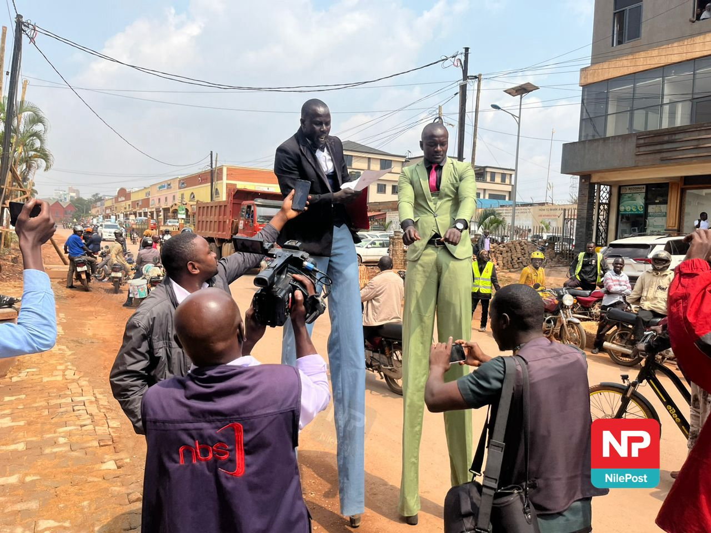

By Ezra Ndyabakira
Abdul Katongole (right) and his assistant were quite the spectacle at the EC headquarters
Kampala witnessed an unusual spectacle on Wdnesday as presidential aspirant Abdul Katongole arrived at the Electoral Commission (EC) headquarters perched high on wooden stilts, only to be politely—but firmly—sent packing.
Katongole, dressed in a striking lime-green suit that seemed to glow under the morning sun, towered nearly two feet above the ground, his long legs exaggerating the already comic effect.
At his side, his loyal assistant sported a sharp black jacket, trying to keep pace with his elevated boss while juggling documents and a look of utter bewilderment.
The duos dramatic arrival immediately drew crowds of onlookers and a flurry of camera phones, as journalists scrambled to capture the scene—some struggling to frame the full length of Katongole without cutting off his stilts.
The Premier League is back on NBS Sport, bringing with it the intrigue, drama, and storylines that stretch well beyond ninety minutes. Match Week One set the tone as Tottenham outclassed Burnley with a commanding 3–0 victory, giving Ugandan fans their first taste of the new season under the #EPLKuNBSport campaign. It was a reminder of what this league consistently delivers — unpredictability, tension, and narratives that go far deeper than the scoreline.
| TEAM | WINS | LOSSES | DRAWS | POINTS | GOAL DIFFERENCE |
|---|---|---|---|---|---|
| MANCHESTER CITY | 23 | 5 | 12 | 69 | +10 |
| ARSENAL | 20 | 8 | 15 | 58 | +9 |
| LIVERPOOL | 18 | 7 | 14 | 55 | +8 |
| CHELSEA | 17 | 6 | 13 | 50 | +7 |
| MANCHESTER UNITED | 16 | 5 | 12 | 48 | +7 |